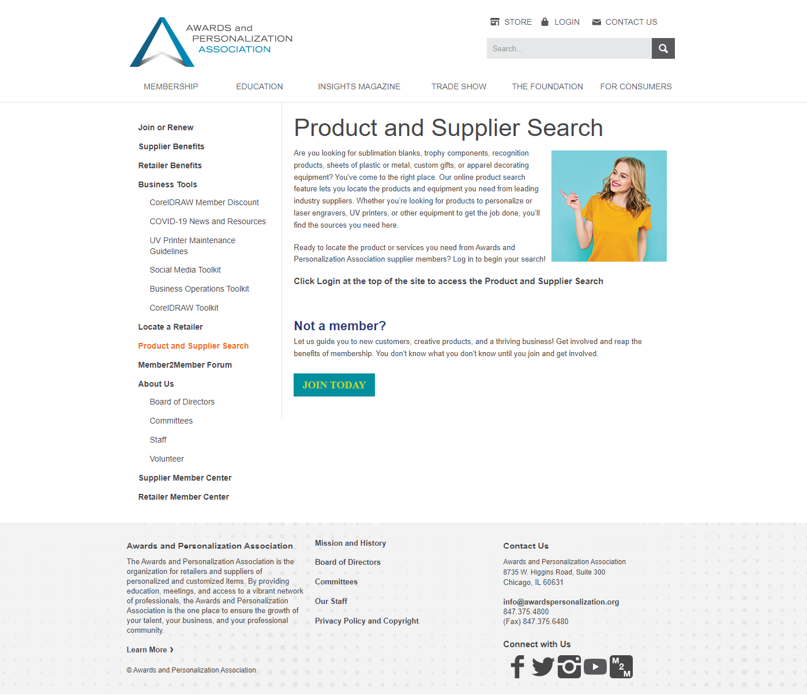

Replaced a clunky bulletin-board system with a searchable vendor directory for the Awards and Personalization Association — improving findability and reducing time-to-result for association members.

The Problem
Goals
Process
This was the first AMC project run as a full Discover → Design/Test → Develop process. Ward introduced and led this methodology; it subsequently became the AMC standard.
Worked with internal association staff and external member vendors to understand how the directory would be used. Built an interactive wireframe and conducted in-person usability testing — including on-site visits to vendor locations — to validate the information architecture before any design work began.
Applied user feedback to create the final front-end design and filtering patterns. Produced requirements documentation for the backend team. Ran additional usability tests on the visual design to confirm findability and interaction clarity before handing off to development.
A well-scoped handoff meant backend development completed in under 2 weeks — from dev start to launch. The directory went live with the bulletin board still available, and members shifted to the new system almost immediately.
Results
The bulletin board was left live alongside the new directory. Within approximately two weeks, members had abandoned it entirely in favor of the searchable directory.
Members responded immediately and enthusiastically. The jump from an unstructured bulletin board to a filterable, validated directory was experienced as a dramatic quality-of-life improvement.
The success of this project led AMC to adopt the Discover → Design/Test → Develop process as the standard methodology for all future association projects.